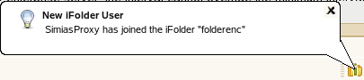

3.8 Downloading an Available iFolder
When others share iFolders with you, the iFolders appear with
the iFolder Download icon  under in your iFolder browser, where
the iFolder Server Name is the name of
the server for that account. To participate in the shared iFolder
on your computer, you can download the iFolder.
under in your iFolder browser, where
the iFolder Server Name is the name of
the server for that account. To participate in the shared iFolder
on your computer, you can download the iFolder.
When a new user joins your shared iFolder list, iFolder announces the avilablity of new shared user with a balloon pop-up message in the Notification area.
Figure 3-1 Example of Notification of a New SharedUser
The shared user also will get a balloon pop-up message in the Notification area soon after he or she finishes downloading the shared iFolder. The message reads that the <Username of the user who shared the iFolder> has joined the <iFolder name>. Whenever a new user joins the shared members, all the existing member users are notified of the new shared member.
-
Right-click the iFolder Services icon
 ,
then click to open the iFolder browser.
,
then click to open the iFolder browser. -
In the list of iFolders, select the available iFolder, then click .
-
If you are not logged in to the account, log in with your username and password, then click .
-
Browse to the location where you want to create a local iFolder, then specify the name you want to use locally for this iFolder.
The location and folder name must satisfy the following guidelines:
-
Click twice.